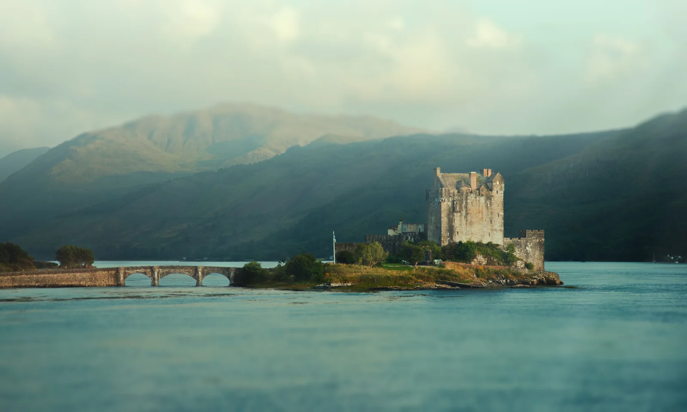

02 / 作品の背景
スコットランドとイングランド
『マクベス』の舞台は、11世紀のスコットランド。その南には、隣国イングランドがありました。
スコットランドとは
現在、日本で「イギリス」と呼ぶ連合王国（UK）は、イングランド、スコットランド、ウェールズ、北アイルランドの4つの国から成り立っています。サッカーやラグビーの国際舞台には、連合王国としてではなく、イングランドやスコットランドとして代表を出しています。
スコットランドは、イングランドやウェールズと同じグレートブリテン島の北部に位置します。美しい自然や、歴史的な名所がたくさんあります。

例えば、首都エジンバラは、古風な街並みが魅力の町。『ハリー・ポッター』の作者J.K.ローリングにインスピレーションを与えた町としても知られています。
また、キルトとバグパイプも、スコットランドを思い浮かべるときに欠かせません。チェック柄のキルトを身に着け、バグパイプを演奏する姿は、スコットランドの文化を伝えています。
王族の血縁でつながったふたつの国
イングランドとスコットランドは、もともと別々の王国でした。一方で、両国の王族は結婚を通じて血縁で結ばれていました。イングランド王ヘンリー7世の娘マーガレットは、スコットランド王ジェームズ4世と結婚。そのひ孫が、スコットランド王ジェームズ6世です。
1603年、イングランド女王エリザベス1世が子どもを残さず亡くなると、イングランド王家の血を引くジェームズ6世が王位を継ぎ、イングランドでは「ジェームズ1世」となりました。同じ人物がふたつの国の王になったのです。これを「同君連合」といいます。ただし、この時点では議会も国の制度も別々でした。
シェイクスピアによってマクベスをが執筆されたのは1606年ごろとされています。シェイクスピアはスコットランド出身の王がイングランドも治める時代に、スコットランドの王位をめぐる物語を描いたのです。
参考資料
スコットランドの文化、王族の血縁と両国の合同、作品の執筆背景について、以下の資料を参照しました（英語）。